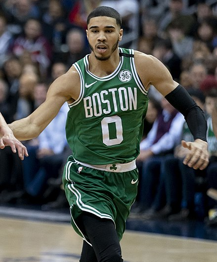

Jayson Christopher Tatum (born March 3, 1998) is an American professional basketball player for the Boston Celtics of the National Basketball Association (NBA). A native of St. Louis, Missouri, Tatum attended hometown Chaminade College Preparatory School, where he was rated a five-star recruit and regarded as one of the top players in the Class of 2016 by recruiting services. He played college basketball for the Duke Blue Devils before entering the 2017 NBA draft. He was selected with the third overall pick by the Boston Celtics. He won the 2019 Skills Challenge during NBA All-Star Weekend.[1
